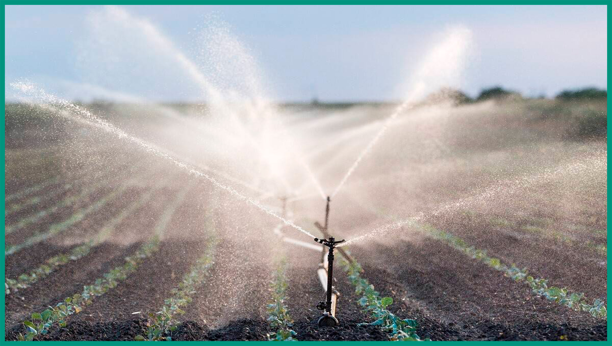
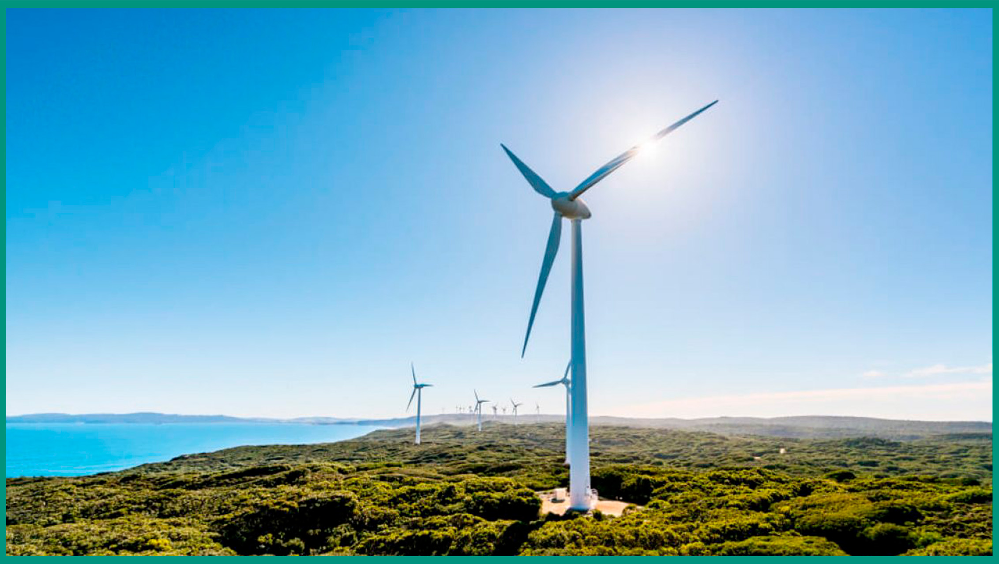
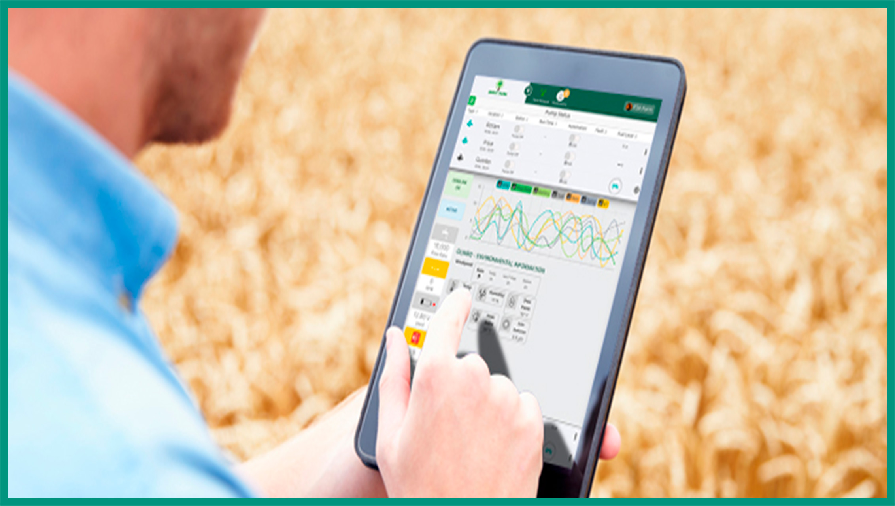

O pacote FutureFarm oferece a você agricultor três ferramentas essenciais para tornar sua fazenda um local mais sustentável, Irrigação inteligente, Energia eólica e Grade sensores.
Uma plantação bem irrigada é necessária para se obter uma boa colheita e para alcançar esse objetivo da forma mais sustentável.
É necessário uma fonte de energia mais limpa possível; saber quando, onde e qual a melhor forma de irrigar a sua plantação. Em relação a energia limpa o Pacote Future Farm garante a instalação de geradores eólicos que podem suprir a necessidade elétrica ou ao menos reduzir o gasto financeiro com ela.
Para cumprir os outros parâmetros sustentáveis a Irrigação inteligente e a Grade de sensores funcionam em conjunto, utilizando-se do conceito de Agricultura de Precisão os sensores captam dados como umidade do solo e nutrientes de uma área, os processam e nosso sistema irá determinar se será necessário irrigar o local.
|  |
 |
 |
Reduza o consumo de água irrigando a plantação corretamente. |
Energia renovável e limpa para manter energizar sua fazenda. |
Captura de dados em tempo real para auxíliar na tomada de decisões. |
|